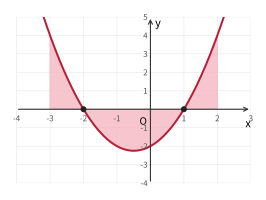
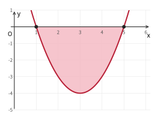
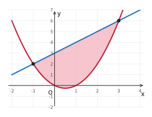

ホーム ＞ 数学II ＞ 積分法（定積分・面積）
別冊章末問題の解答
1. (1) 不定積分 \(\displaystyle\int\left(6 x^{2} + 2 x - 3\right)dx\) を求めよ。(2) 定積分 \(\displaystyle\int_{-2}^{1}\left(6 x^{2} + 2 x - 3\right)dx\) の値を求めよ。
各項を積分する
\(\int x^n\,dx=\dfrac{x^{n+1}}{n+1}+C\)。
\[\int\left(6 x^{2} + 2 x - 3\right)dx=- 3 x+x^{2}+2 x^{3}+C\]不定積分
積分定数を \(C\) として
\[\int\left(6 x^{2} + 2 x - 3\right)dx=2 x^{3} + x^{2} - 3 x+C\]定積分：両端の値を代入
定積分では \(C\) は不要。
\[\int_{-2}^{1}\left(6 x^{2} + 2 x - 3\right)dx=\Big[2 x^{3} + x^{2} - 3 x\Big]_{-2}^{1}\]\[F(1)=0,\quad F(-2)=-6\]値を求める
\[F(1)-F(-2)=0-\left(-6\right)=6\]（例題1の型）
【答案】
\[\text{(1) }2 x^{3} + x^{2} - 3 x+C\quad\text{(2) }6\]答
2. 定積分 \(\displaystyle\int_{-3}^{2}\left|x^{2} + x - 2\right|dx\) の値を求めよ。
絶対値の中の符号を調べる
\(x^{2} + x - 2=\left(x - 1\right) \left(x + 2\right)\)。\(x=-2,\ 1\) が境目。
\(-3\leqq x\leqq -2\) で \(f(x)\geqq0\)、\(-2\leqq x\leqq 1\) で \(f(x)\leqq0\)、\(1\leqq x\leqq 2\) で \(f(x)\geqq0\)。
絶対値をはずして区間を分ける
\[\int_{-3}^{2}\left|x^{2} + x - 2\right|dx=\int_{-3}^{-2}\left(x^{2} + x - 2\right)dx+\int_{-2}^{1}\left\{-\left(x^{2} + x - 2\right)\right\}dx+\int_{1}^{2}\left(x^{2} + x - 2\right)dx\]不定積分を求める
\[\int\left(x^{2} + x - 2\right)dx=\dfrac{x^{3}}{3} + \dfrac{x^{2}}{2} - 2 x\]各区間の値
\[\dfrac{11}{6},\quad \dfrac{9}{2},\quad \dfrac{11}{6}\]（左の区間から順に）
合計
\[\dfrac{11}{6}+\dfrac{9}{2}+\dfrac{11}{6}=\dfrac{49}{6}\]
（例題2の型）
【答案】
\[\dfrac{49}{6}\]答
3. 放物線 \(y=x^{2} - 6 x + 5\) と \(x\) 軸で囲まれた部分の面積 \(S\) を求めよ。
\(x\) 軸との交点を求める
\[x^{2} - 6 x + 5=0\ \Rightarrow\ \left(x - 5\right) \left(x - 1\right)=0\ \Rightarrow\ x=1,\ 5\]上下関係を調べる
\(1\leqq x\leqq 5\) では曲線は \(x\) 軸の下側。例：\(x=3\) で \(y=-4\)。
面積を定積分で表す
面積 = （上）−（下）= \(0-f(x)\)。
\[S=\int_{1}^{5}\left(- x^{2} + 6 x - 5\right)dx\]計算する
\[S=\Big[- \dfrac{x^{3}}{3} + 3 x^{2} - 5 x\Big]_{1}^{5}=\dfrac{25}{3}-\left(- \dfrac{7}{3}\right)=\dfrac{32}{3}\]
（例題3の型）
【答案】
\[S=\dfrac{32}{3}\]答
4. 放物線 \(y=x^{2} - x\) と直線 \(y=x + 3\) で囲まれた部分の面積 \(S\) を求めよ。
交点の \(x\) 座標を求める
\(x^{2} - x=x + 3\) を解く。
\[x^{2} - 2 x - 3=0\ \Rightarrow\ \left(x - 3\right) \left(x + 1\right)=0\ \Rightarrow\ x=-1,\ 3\]上下関係を調べる
\(x=1\) で \(f=0,\ g=4\)。区間で「直線 \(y=g(x)\) が上、放物線 \(y=f(x)\) が下」。
面積を定積分で表す
\[S=\int_{-1}^{3}\left\{\left(x + 3\right)-\left(x^{2} - x\right)\right\}dx=\int_{-1}^{3}\left(- x^{2} + 2 x + 3\right)dx\]計算する
\[S=\Big[- \dfrac{x^{3}}{3} + x^{2} + 3 x\Big]_{-1}^{3}=9-\left(- \dfrac{5}{3}\right)=\dfrac{32}{3}\]
（例題4の型）
【答案】
\[S=\dfrac{32}{3}\]答
5. 関数 \(f(x)\) が \(f(x)=6 x^{2} + x+\displaystyle\int_{0}^{2}f(t)\,dt\) を満たすとき、\(f(x)\) を求めよ。
定積分を定数 \(k\) とおく
\(\int_{0}^{2}f(t)\,dt=k\)（\(k\) は定数）とおくと
\[f(x)=6 x^{2} + x+k\]\(k\) についての方程式を作る
\(f(t)=6 t^{2} + t+k\) を、\(t\) で \(0\) から \(2\) まで積分する。
\[k=\int_{0}^{2}\left(6 t^{2} + t+k\right)dt=\Big[2 t^{3} + \dfrac{t^{2}}{2}+kt\Big]_{0}^{2}\]\[k=18+2k\]\(k\) を求める
\[k(1-2)=18\ \Rightarrow\ k=-18\]答え
\[f(x)=6 x^{2} + x-18=6 x^{2} + x - 18\]（例題5の型）
【答案】
\[f(x)=6 x^{2} + x - 18\]答